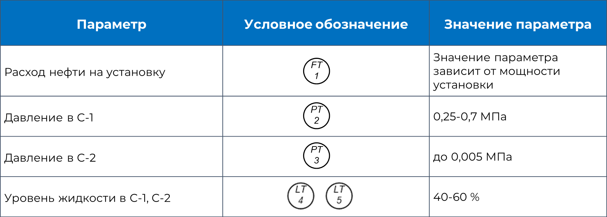

Дегазация нефти
Для процессов дегазации нефти чаще всего применяется процесс многоступенчатой сепарации. Выбор количества ступеней зависит от количества газа в ней.
Процесс дегазации нефти:
С-1 – сепаратор 1 ступени; С-2 – сепаратор 2 ступени
Нефть, поступающая со скважин, поступает на первую ступень сепарации в С-1, где частично дегазируется и поступает на вторую ступень сепарации в С-2. Газ из сепараторов С-1, С-2, поступает на ГПЗ, а частично подготовленная нефть на дальнейшую подготовку.
Параметры процесса
